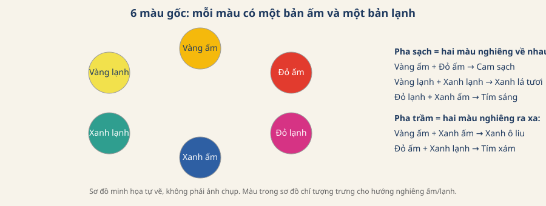

Pha màu cơ bản: 6 màu gốc pha thành màu mới
Tác giả: Nguyễn Trung Đức
Chuyên mục: Bắt đầu từ số 0 — Cập nhật: 26/11/2026
Bạn mở hộp màu 12 ô ra và thấy một màu xanh lá đã pha sẵn, một màu cam đã pha sẵn, một màu tím đã pha sẵn. Bạn tô trực tiếp chúng lên giấy và bức vẽ trông giống màu trong hộp, không giống màu ngoài đời. Đó không phải lỗi của bạn. Hộp màu học sinh thường xếp sẵn nhiều màu đã trộn, và khi bạn trộn thêm một màu đã trộn với một màu khác, màu mới rất dễ đục. Bài này dạy bạn cách pha màu từ 6 màu gốc, nhưng bạn không học cả 6 màu cùng lúc. Bạn bắt đầu với 3 màu lõi — một vàng, một đỏ, một xanh — rồi thêm 3 màu nữa khi đã quen tay. Chỉ với 6 màu này, bạn pha được cam, xanh lá, tím, xám, nâu và cả màu da, mà vẫn giữ được màu trong. Cách pha này dùng đúng bộ đồ tối thiểu ở bài bộ đồ: hộp pan 12 màu, cọ tròn cỡ 8 và cỡ 4, giấy 300 gsm cold press.

Ba màu lõi ở hàng trên, ba màu bổ sung ở hàng dưới; mũi tên chỉ ba cặp pha ra ba màu thứ cấp sạch.
Vì sao hộp 12 màu vẫn chưa đủ
Người mới thường nghĩ càng nhiều màu càng dễ vẽ. Thực tế ngược lại: hộp càng nhiều màu, bạn càng ít học cách pha, và màu càng dễ đục. Watercolor Daily giải thích rằng nhiều màu trong hộp lớn vốn đã là hỗn hợp của vài sắc tố. Bạn lấy một màu đã trộn sẵn rồi trộn tiếp với một màu khác, tức là bạn đang trộn ba, bốn sắc tố cùng lúc, và kết quả thường là màu xám nâu. ArtTools cũng viết rằng khi chỉ có ba, năm hoặc sáu màu, bạn không còn đường tắt để bấm vào, bạn buộc phải pha, và pha màu chính là lúc màu nước trở thành của bạn.
Bài này không bắt bạn mua thêm màu. Bạn dùng đúng hộp pan 12 màu đã có ở bài bộ đồ tối thiểu. Trong 12 ô đó, bạn tìm ra 6 màu gốc ấm và lạnh rồi pha từ chúng. Sáu ô còn lại bạn vẫn dùng được khi cần tô nhanh, nhưng bài tập trong bài này chỉ dùng 6 màu gốc, để bạn thấy rõ mỗi màu mới đến từ đâu.
Vòng màu và ba màu gốc
Vòng màu là cách xếp các màu theo thứ tự quanh một vòng tròn: vàng, cam, đỏ, tím, xanh dương, xanh lá, rồi quay lại vàng. Ba màu gốc là vàng, đỏ và xanh dương. Ba màu thứ cấp là cam (vàng + đỏ), xanh lá (vàng + xanh dương) và tím (đỏ + xanh dương). Các màu còn lại — nâu, xám, xanh ô liu, màu da — đều đến từ việc trộn ba màu gốc với nhau theo tỉ lệ không đều, hoặc trộn một màu gốc với màu thứ cấp đối diện nó trên vòng màu. ArtTools viết rằng mọi màu trầm đều đến từ hai cách trộn này, và đó là lý do bạn không cần mua riêng từng màu nâu hay xám.
Quy tắc pha màu ở trường học — vàng + đỏ = cam, vàng + xanh = xanh lá, đỏ + xanh = tím — chỉ đúng một nửa. Nó đúng khi màu bạn dùng là màu gốc thuần. Nhưng màu thật không bao giờ thuần. Mỗi màu đều nghiêng về một màu kề bên trên vòng màu, và độ nghiêng đó quyết định màu pha ra sạch hay đục. Đó là toàn bộ nội dung của bài này.
Nóng và lạnh là tương đối, không phải nhãn cố định
Nóng và lạnh ở đây không phải nhiệt độ. Nóng và lạnh chỉ nói màu đó nghiêng về phía nào trên vòng màu. Nhưng Winsor & Newton viết rằng không có định nghĩa cố định nào cho màu ấm và màu lạnh trong một dải màu: ấm hay lạnh tùy thuộc vào màu đặt cạnh nó. Xanh ultramarine đặt cạnh xanh cerulean thì ấm hơn, vì nó đỏ hơn; đặt cạnh đỏ son thì lại lạnh hơn. Quy tắc chung mà Winsor & Newton đưa ra: càng gần đỏ thì càng ấm, càng gần xanh lá thì càng lạnh, và màu ấm trông như tiến lại gần bạn hơn, màu lạnh trông như lùi xa hơn.
Vì vậy bạn đừng học thuộc một bảng màu cố định rồi mua đúng 6 tuýp đó. Bạn mở hộp pan 12 màu của mình ra và chọn, cho mỗi màu gốc, màu ấm nhất và màu lạnh nhất trong hộp đó. Hai màu vàng trong hộp của bạn, màu nào nhìn hơi cam thì là vàng ấm, màu nào nhìn hơi xanh lá thì là vàng lạnh. Hai màu đỏ, màu nào nhìn hơi cam thì là đỏ ấm, màu nào nhìn hơi hồng tím thì là đỏ lạnh. Hai màu xanh, màu nào nhìn hơi tím thì là xanh ấm, màu nào nhìn hơi xanh lá thì là xanh lạnh. Hãng khác nhau ghi tên khác nhau, nhưng hướng nghiêng thì giống nhau — và hướng nghiêng mới là thứ quyết định màu pha ra sạch hay đục.
Ba màu lõi: bắt đầu với ba màu này
ArtTools khuyên người mới bắt đầu chỉ với 3 màu — một vàng, một đỏ, một xanh — rồi mới lên 6 màu khi đã quen. Ba màu lõi của bài này là đúng 3 màu ArtTools khuyên người mới bắt đầu chỉ với 3 màu — một vàng, một đỏ, một xanh — nên bạn dùng chúng được cho cả pha màu lẫn chồng lớp. Hai trong ba màu này, vàng nghệ và hồng cánh sen, cũng là ví dụ màu trong và bám màu trong bài chồng lớp; màu thứ ba trong ví dụ đó là xanh phthalo, nay là một trong 3 màu bổ sung của bạn. Ba màu này pha được mọi màu thứ cấp, nhưng chỉ tím là sáng và trong; cam và xanh lá pha ra sẽ trầm. Đó không phải lỗi — đó là lý do bạn cần thêm ba màu nữa ở mục sau.
| Màu | Tên trên ô màu | Nghiêng về | Pha ra |
|---|---|---|---|
| Vàng ấm | Vàng nghệ (Hansa Yellow Medium, PY97) | Cam | Vàng kim, cam trầm |
| Đỏ lạnh | Hồng cánh sen (Quinacridone Rose, PV19) | Tím | Hồng, tím sáng |
| Xanh ấm | Xanh ultramarine (French Ultramarine, PB29) | Tím | Tím sáng, bầu trời có vân |
Bạn nhận biết ba màu này bằng mắt, không cần nhớ mã. Vàng nào nhìn hơi cam là vàng ấm. Đỏ nào nhìn hơi hồng tím là đỏ lạnh. Xanh nào nhìn hơi tím là xanh ấm. Mã sắc tố là dãy chữ và số in trên nhãn tuýp hoặc hộp màu, ví dụ PB29. Mã này cho biết màu đó chứa đúng một sắc tố nào. ArtTools khuyên người mới chọn màu có một sắc tố duy nhất trên nhãn, vì màu một sắc tố pha ra màu mới sạch và dễ đoán. Màu tiện lợi có tên sẵn như "xanh ô liu" hay "hồng bụi" thường chứa sẵn vài sắc tố, trộn thêm sẽ đục.
Vì sao ba màu này pha được tím sáng mà không pha được cam sáng hay xanh lá sáng? Tím cần đỏ lạnh và xanh ấm, cả hai đều nghiêng về tím, và cả hai đều có trong 3 màu lõi. Cam cần vàng ấm và đỏ ấm, nhưng bạn chưa có đỏ ấm. Xanh lá cần vàng lạnh và xanh lạnh, nhưng bạn chưa có cả hai. Mỗi màu thứ cấp sáng cần một cặp màu nghiêng về phía nhau, và 3 màu lõi chỉ đủ cặp cho tím. Bạn thấy ngay chỗ thiếu — và đó là lúc ba màu bổ sung vào việc.
Ba màu bổ sung: thêm ba màu nữa khi đã quen tay
Khi bạn đã pha quen với 3 màu lõi, bạn thêm 3 màu còn lại. Mỗi màu bổ sung mở ra một màu thứ cấp sáng mà trước đó bạn chưa pha được.
| Màu | Tên trên ô màu | Nghiêng về | Pha ra |
|---|---|---|---|
| Vàng lạnh | Vàng chanh (Lemon Yellow, PY3) | Xanh lá | Xanh lá tươi, điểm sáng vàng chanh |
| Đỏ ấm | Đỏ son (Vermilion / Scarlet) | Vàng | Cam sạch, đỏ tươi |
| Xanh lạnh | Xanh phthalo (Phthalo Blue, PB15:3) | Xanh lá | Xanh ngọc, bóng mát lạnh |
Vàng lạnh mở ra xanh lá sáng: vàng chanh và xanh phthalo đều nghiêng về xanh lá, nên xanh lá pha ra tươi và trong. Đỏ ấm mở ra cam sáng: vàng nghệ và đỏ son đều nghiêng về cam, nên cam pha ra giữ được độ rực. Xanh lạnh cùng với vàng lạnh cho xanh lá sáng, và cùng với đỏ ấm cho tím xám — màu tím trầm hợp vẽ bóng mát.
Ba lưu ý khi chọn 3 màu bổ sung. Thứ nhất, đỏ son: hộp pan học sinh thường ghi "Vermilion" hoặc "Scarlet", mã sắc tố khác nhau theo hãng nên bài này không ghi mã — bạn nhận biết bằng mắt: đỏ nào nhìn hơi cam thì là đỏ ấm. Thứ hai, xanh phthalo: nếu hộp của bạn có xanh cerulean thay vì xanh phthalo, bạn vẫn dùng được — cerulean cũng nghiêng về xanh lá, chỉ đục hơn và nhạt hơn một chút; phthalo trong và bám màu hơn nên bài chồng lớp dùng nó làm ví dụ. Thứ ba, vàng đất (Yellow Ochre) không phải vàng ấm chính của bài này: nó là màu đất, hợp để pha màu trầm và màu da, nhưng không pha được cam sáng — bạn đừng lấy vàng đất thay cho vàng nghệ.
Bạn không cần mua thêm tuýp nào cho 6 màu này. Cả 6 màu đều có trong hộp pan 12 màu ở bài bộ đồ tối thiểu, chỉ khác tên gọi tùy hãng. Bạn tìm đúng ô theo hướng nghiêng, không tìm đúng tên hãng.
Ở Việt Nam, hộp pan 12 màu kiểu này mua được ở các cửa hàng họa cụ — ví dụ Họa cụ Art Store ở Thủ Đức, TP.HCM niêm yết bộ Winsor & Newton Cotman 12 hoặc 24 màu với giá 375.000–650.000 đồng. Bộ này thuộc dòng học sinh mà bài dùng làm ví dụ, kèm sẵn 1 cọ travel để mang đi vẽ ngoài trời.
Vì sao màu pha ra hay bị đục
Màu đục đến từ việc cả ba màu gốc cùng có mặt trong một hỗn hợp. Vàng, đỏ và xanh dương trộn với nhau sẽ triệt tiêu lẫn nhau và đi về xám hoặc nâu. Watercolor Daily lấy ví dụ: bạn pha xanh lá từ vàng ấm (nghiêng về đỏ) và xanh ấm (cũng nghiêng về đỏ). Bạn tưởng mình chỉ trộn hai màu gốc, nhưng thực ra bạn đã lén đưa màu đỏ thứ ba vào hỗn hợp. Đỏ là màu đối diện với xanh lá trên vòng màu, nên nó làm xanh lá xỉn đi, ngả sang màu kaki. ArtTools nói thẳng hơn: màu đục là thông tin, không phải thất bại. Nó cho bạn biết bạn đã trộn cả ba màu gốc với tỉ lệ gần bằng nhau, và lần sau bạn sẽ bớt một màu đi.
Quy tắc pha sạch vì vậy chỉ có một câu: muốn pha một màu thứ cấp sạch, chọn hai màu nghiêng về phía nhau. Hai màu nghiêng về phía nhau là hai màu mà phía nghiêng của chúng gặp nhau ở màu bạn muốn pha. Muốn pha cam sạch, chọn vàng ấm và đỏ ấm, vì cả hai đều nghiêng về cam. Muốn pha xanh lá tươi, chọn vàng lạnh và xanh lạnh, vì cả hai đều nghiêng về xanh lá. Muốn pha tím sáng, chọn đỏ lạnh và xanh ấm, vì cả hai đều nghiêng về tím. Khi hai màu nghiêng về phía nhau, màu gốc thứ ba không có mặt trong hỗn hợp, nên màu pha ra giữ được độ trong.
Ngược lại, hai màu nghiêng ra xa nhau sẽ pha ra màu trầm. Vàng ấm trộn với xanh ấm cho xanh ô liu, xanh xô thơm và xanh rừng — những màu xanh của lá cây thật ngoài đời, không phải xanh lá rực của hộp màu. Đỏ ấm trộn với xanh lạnh cho tím xám và tím hoa cà, hợp để vẽ bóng mát. Đây không phải lỗi pha màu. Đây là cách bạn vẽ thế giới tự nhiên thay vì vẽ hộp bút chì màu. ArtTools viết rằng những hỗn hợp "nghiêng ngược" này không phải sai lầm, chúng là cách bạn vẽ lá cây và bóng mát cho giống thật.
Ba công thức pha màu thứ cấp sạch
Bạn chỉ cần nhớ ba công thức dưới đây. Mỗi công thức có một bản sáng và một bản trầm. Bạn pha hai màu với tỉ lệ gần bằng nhau, thử trên giấy nháp trước, rồi mới tô lên tranh. Màu nước khô xong nhạt hơn lúc ướt, nên bạn pha đậm hơn màu bạn muốn một chút.
Cam. Bản sáng: vàng ấm + đỏ ấm. Cả hai đều nghiêng về cam, không có xanh dương trong hỗn hợp nên cam giữ được độ rực. Bản trầm: vàng lạnh + đỏ lạnh, cho cam đào và cam đất. Cam sáng hợp vẽ hoàng hôn, cam trầm hợp vẽ gạch, đất và quả chín.
Xanh lá. Bản sáng: vàng lạnh + xanh lạnh. Cả hai đều nghiêng về xanh lá, không có đỏ trong hỗn hợp nên xanh lá tươi và trong. Bản trầm: vàng ấm + xanh ấm, cho xanh ô liu, xanh xô thơm và xanh rừng. Xanh lá sáng hợp vẽ lá non, xanh lá trầm hợp vẽ lá già và cây trong bóng mát.
Tím. Bản sáng: đỏ lạnh + xanh ấm. Cả hai đều nghiêng về tím, không có vàng trong hỗn hợp nên tím sáng và trong. Bản trầm: đỏ ấm + xanh lạnh, cho tím xám và tím hoa cà, hợp vẽ bóng mát và hoa tím nhạt. Tím là màu dễ đục nhất trong ba màu thứ cấp, vì chỉ cần một chút vàng lọt vào là tím ngả xám ngay. Bạn pha tím bằng đỏ lạnh và xanh ấm, và bạn thêm từng chút một, thử trên giấy nháp sau mỗi lần thêm.
Bạn có thể kiểm tra mình đã hiểu quy tắc hay chưa bằng một câu hỏi: bạn muốn pha xanh lá tươi mà chỉ có vàng ấm và xanh ấm, bạn pha được không? Câu trả lời là không — hai màu này đều nghiêng về đỏ, nên xanh lá pha ra sẽ ngả kaki. Bạn cần vàng lạnh và xanh lạnh. Nếu bạn trả lời đúng câu này, bạn đã nắm được quy tắc quan trọng nhất của bài.
Pha màu tối, xám và nâu mà không dùng đen tuýp
Màu đen trong tuýp thường làm bức vẽ phẳng và chết. Watercolor Daily viết rằng xanh ultramarine (PB29) trộn với nâu đất cháy (Burnt Sienna, PBr7) cho màu tối có sức sống hơn hẳn đen tuýp. Bạn thêm nhiều xanh hơn sẽ được màu tối lạnh như bầu trời đêm mùa đông, thêm nhiều nâu hơn sẽ được màu tối ấm như bóng cà phê. ArtTools cũng có một công thức màu tối gần như đen: xanh ultramarine, đỏ hồng và một chút vàng, tô xong để khô rồi chồng thêm một lớp nữa cho vùng tối nhất.
Màu xám cũng pha được từ 6 màu gốc, không cần mua riêng. Xanh ultramarine trộn với một chút đỏ hồng cho xám trung tính, hợp vẽ bóng của vật trắng. ArtTools gọi đây là màu bóng ưa thích của tác giả, vì nó sống động hơn đen nhiều. Bạn thêm vàng vào hỗn hợp xám sẽ được xám ấm, thêm xanh lạnh sẽ được xám lạnh. Màu nâu thì còn dễ hơn: bất kỳ màu xanh nào trộn với bất kỳ màu cam hay đỏ ấm nào, rồi làm dịu bằng một chút vàng, đều cho nâu đất. Bạn không cần nhớ công thức nâu chính xác, vì nâu là màu dễ pha nhất trong các màu trầm.
Màu da cũng pha được từ 6 màu gốc, không cần mua tuýp màu da riêng. Watercolor Daily gợi ý: lớp nền là hỗn hợp loãng của đỏ hồng và vàng nghệ cho màu da ấm và nhạt. Vùng bóng thì thêm một chút xanh phthalo hoặc xanh ultramarine để tối đi mà vẫn trong. Vùng má, tai và môi thì phủ một lớp rất mỏng đỏ tươi lên trên. Bạn pha màu da nhạt hơn màu bạn muốn một chút vì bạn luôn có thể chồng thêm một lớp mỏng khi lớp dưới đã khô hẳn — và nhớ màu nước khô xong nhạt hơn lúc ướt nên đừng pha quá nhạt.
Ba thói quen pha màu
Kỹ thuật pha màu không nằm ở công thức, mà nằm ở thói quen. ArtTools liệt kê ba thói quen giúp màu pha ra sạch hơn bất kỳ công thức nào.
Thứ nhất, pha trên giấy, không pha trong ô màu. Bạn chấm một chút màu này và một chút màu kia cạnh nhau trên giấy nháp, để chúng hòa vào nhau ở chỗ chạm nhau. Cách này giữ khay màu sạch, và bạn thấy được màu thật trên giấy thay vì màu trong ô pha. Bài kỹ thuật loang màu đã dạy bạn cách hai màu ướt gặp nhau trên giấy, và bài này dùng lại chính kỹ thuật đó để pha màu.
Thứ hai, làm ướt màu trước khi pha. Bạn nhỏ một giọt nước lên mỗi ô màu và đợi vài giây cho màu mềm ra rồi mới chấm cọ vào. Màu khô lấy sắc tố không đều, hỗn hợp sẽ loang lổ. Bạn cũng nên rửa cọ hoặc dùng cọ thứ hai khi lấy màu thứ hai, để màu thứ hai không lẫn vào ô màu thứ nhất.
Thứ ba, nghĩ về độ đậm nhạt, không chỉ nghĩ về màu. Độ đậm nhạt là màu đó sáng hay tối đến mức nào. Bạn nheo mắt nhìn vật mẫu và nhận ra quả táo đỏ thường tối hơn cành nâu. Pha đúng màu mới là nửa công việc, pha đúng độ đậm nhạt mới là nửa còn lại. Bạn thử màu trên giấy nháp sau mỗi lần pha, vì màu nước khô xong nhạt hơn lúc ướt. Bạn thêm màu đậm vào màu nhạt từng chút một, không làm ngược lại, vì chỉ một chút màu đậm cũng đủ đổi cả hỗn hợp.
Bạn sắp xếp khay màu cũng giúp pha nhanh hơn. Bạn xếp 6 ô theo đúng thứ tự 3 lõi rồi 3 bổ sung: vàng nghệ, hồng cánh sen, xanh ultramarine, rồi vàng chanh, đỏ son, xanh phthalo. Bạn xếp các ô theo vòng màu: vàng, rồi đỏ, rồi xanh. Bạn dành riêng một ô trống cho màu đang pha, để màu xanh không bao giờ lọt vào màu cam của bạn. Cách sắp xếp này không bắt buộc, nhưng nó giúp bạn pha màu mà không phải dừng lại tìm ô.
Bài tập: bảng pha màu của riêng bạn
Bài tập này là bài tập quan trọng nhất của bài. Bạn làm một lần, bạn sẽ có một bảng tra cứu dùng được cho mọi bức vẽ sau này. Watercolor Daily gọi bảng pha màu là cách nhanh nhất để học màu của bạn, và ArtTools gọi nó là giờ học hữu ích nhất bạn có thể dành cho màu nước.
Bước 1: kẻ bảng và tô 3 màu lõi. Bạn dán một tờ giấy 300 gsm cold press lên bìa cứng bằng băng dính giấy, rồi kẻ một bảng ô vuông bằng bút chì. Bạn tô một vệt của từng màu trong 3 màu lõi, chưa pha trộn gì. Ba vệt này là màu tham chiếu của bạn. Bạn ghi tên màu và mã sắc tố (nếu có trên nhãn) bên cạnh mỗi vệt. Bạn dùng đúng loại giấy bạn vẫn vẽ, vì màu pha trên giấy cellulose và giấy cotton trông khác nhau.
Bước 2: pha 3 màu thứ cấp bằng 3 màu lõi. Bạn pha tím sáng (đỏ lạnh + xanh ấm), cam trầm (vàng ấm + đỏ lạnh) và xanh lá trầm (vàng ấm + xanh ấm), mỗi cặp trộn với tỉ lệ gần bằng nhau. Bạn tô ba màu này vào bảng và ghi công thức bên cạnh. Bạn sẽ thấy ngay: tím sáng và trong, còn cam và xanh lá đều trầm — vì mỗi cặp đều có một màu nghiêng ra xa. Bạn ghi lại chỗ thiếu này vào bảng, vì nó là lý do bạn cần bước 3.
Bước 3: thêm 3 màu bổ sung và pha 3 màu thứ cấp sáng. Bạn tô 3 màu bổ sung vào bảng, rồi pha cam sáng (vàng ấm + đỏ ấm), xanh lá sáng (vàng lạnh + xanh lạnh) và tím xám (đỏ ấm + xanh lạnh). Bạn tô ba màu này vào bảng, đặt cạnh ba màu ở bước 2 để thấy rõ sự khác nhau giữa pha "nghiêng về nhau" và pha "nghiêng ra xa". Bạn ghi công thức bên cạnh mỗi ô, vì bảng pha màu sẽ nhớ công thức thay cho bạn.
Bước 4: thêm 3 ô tối, xám, nâu và một thang đậm nhạt. Bạn pha màu tối (xanh ultramarine + nâu đất cháy), màu xám (xanh ultramarine + một chút đỏ hồng) và màu nâu (một màu xanh + một màu cam), tô ba ô này vào cuối bảng. Rồi bạn lấy một màu sáng trong ba màu vừa pha, tô năm vệt, mỗi vệt thêm nhiều nước hơn vệt trước, từ đậm nhất đến nhạt nhất. Bạn sẽ thấy một màu có thể nhạt dần thành gần như trắng giấy mà vẫn giữ được sắc của nó. Bạn cất bảng pha màu vào sổ để tra cứu khi vẽ.
Thời gian làm bảng này khoảng 20 đến 30 phút theo ước tính thực hành (tùy tay người vẽ), chưa tính thời gian chờ khô. Bạn không cần làm xong trong một buổi. Bạn có thể làm bước 1 và 2 tối nay, bước 3 và 4 tối mai. Bảng pha màu càng dùng nhiều càng có giá trị, vì mỗi lần bạn pha thêm một cặp màu mới, bạn lại ghi thêm một ô vào bảng.
Một tuần chỉ dùng ba màu lõi
Trước khi dùng cả 6 màu, bạn thử vẽ một tuần chỉ với 3 màu lõi. Bạn vẽ một bức nhỏ mỗi ngày, khổ bưu thiếp, chỉ dùng vàng nghệ, hồng cánh sen và xanh ultramarine. Bạn sẽ thấy tím của bạn sáng và trong ngay từ ngày đầu, còn cam và xanh lá của bạn đều trầm — cam ngả đào, xanh lá ngả ô liu. Bạn đừng sửa bằng cách mua thêm màu. Bạn vẽ tiếp: lá cây bằng xanh ô liu trông thật hơn lá xanh rực, quả chín bằng cam đào trông chín hơn cam rực. Cuối tuần, bạn thêm 3 màu bổ sung và vẽ lại một bức trong tuần: cam sáng và xanh lá sáng xuất hiện, và bạn hiểu vì sao mỗi màu bổ sung tồn tại. Một tuần này đáng giá hơn việc đọc lại bảng màu mười lần, vì tay bạn đã nhớ chỗ thiếu trước khi mắt bạn đọc tên màu bổ sung.
Những lỗi thường gặp khi pha màu
Màu nào pha ra cũng đục. Bạn đang trộn cả ba màu gốc trong một hỗn hợp. Bạn kiểm tra lại hướng nghiêng của hai màu bạn dùng: chúng có nghiêng về phía nhau không, hay cả hai đều nghiêng về màu thứ ba? Bạn thử lại với cặp nghiêng về nhau và so sánh hai vệt trên giấy nháp. Bài "7 lỗi thường gặp khi mới vẽ màu nước" trong website này có một lỗi riêng về màu đục, bạn đọc thêm ở đó nếu cần.
Màu pha ra đúng nhưng tô lên giấy lại khác. Bạn pha màu trong ô khay và nhìn màu trong ô, nhưng màu trên giấy mới là màu thật. Bạn thử màu trên giấy nháp cùng loại giấy với tranh, vì màu trên giấy cellulose và giấy cotton khác nhau, và màu khô xong nhạt hơn lúc ướt. Bạn pha đậm hơn màu bạn muốn một chút rồi thử lại.
Bạn pha màu da bị xám. Bạn đã cho quá nhiều xanh vào hỗn hợp. Bạn làm lại từ đầu với đỏ hồng và vàng nghệ loãng, rồi chỉ thêm xanh bằng đầu cọ, từng chút một, thử trên giấy nháp sau mỗi lần thêm. Bạn nhớ rằng màu da nhạt hơn màu bạn nghĩ, vì bạn luôn có thể chồng thêm một lớp mỏng khi lớp dưới khô hẳn.
Bạn không nhớ màu nào pha ra màu nào. Đó là lý do bạn cần bảng pha màu ở bài tập trên. Bạn không cần nhớ công thức trong đầu, bạn chỉ cần nhớ quy tắc: hai màu nghiêng về phía nhau cho màu sạch, hai màu nghiêng ra xa nhau cho màu trầm. Bảng pha màu sẽ nhớ công thức thay cho bạn.
Kết luận
Bạn không cần hộp màu 24 ô để vẽ đẹp. Bạn cần 3 màu lõi — vàng nghệ, hồng cánh sen, xanh ultramarine — và một quy tắc duy nhất: chọn hai màu nghiêng về phía nhau để pha màu sạch, chọn hai màu nghiêng ra xa nhau để pha màu trầm. Bạn vẽ một tuần chỉ với 3 màu lõi, rồi thêm 3 màu bổ sung — vàng chanh, đỏ son, xanh phthalo — để có đủ cặp sáng cho cả cam, xanh lá và tím. Bạn pha màu tối, xám, nâu và màu da từ chính 6 màu này, không cần mua thêm tuýp nào. Bạn làm bảng pha màu của riêng mình một lần, và từ đó về sau mỗi lần vẽ bạn chỉ cần mở bảng ra tra cứu.
Bài tiếp theo trong website này là bài vẽ trên giấy khô (wet-on-dry), nơi bạn dùng chính những màu vừa pha để vẽ nét sắc và chồng lớp. Bạn đọc bài đó khi đã làm xong bảng pha màu, vì khi đó bạn đã có sẵn màu để tô.
Nguồn tham khảo
- Watercolor Daily, "Split-Primary Palette Guide: Mix Any Color with 6 Tubes" — quy tắc pha sạch (hai màu nghiêng về phía nhau) và công thức màu tối bằng Ultramarine + Burnt Sienna: https://www.watercolordaily.com/blog/split-primary-palette-watercolor-mixing-guide
- ArtTools, "Limited Watercolor Palette: Beginner's Mixing Guide" — bắt đầu với 3 màu rồi lên 6 màu; màu một sắc tố pha sạch; ba thói quen pha màu: https://www.arttools.com/limited-watercolor-palette-beginners-mixing-guide/
- Winsor & Newton, "Understanding warm and cool colours" — ấm và lạnh là tương đối, tùy màu đặt cạnh; chọn màu ấm nhất và lạnh nhất của mỗi màu gốc trong dải màu của bạn: https://eu.winsornewton.com/blogs/guides/understanding-warm-and-cool-colours
- ArtHero, "Winsor & Newton Cotman — Review & Ratings" — bảng 6 màu cho hộp học sinh (vàng chanh, vàng cadmium, đỏ cadmium, đỏ alizarin, ultramarine, phthalo; nâu đất + ultramarine cho xám và đen): https://arthero.app/category/compare-watercolor-paints/winsor-newton-cotman
- Jackson's Art Blog, "Watercolour Painting for Beginners: What You Need to Get Started" — hộp pan 12 màu, màu học sinh nồng độ sắc tố thấp hơn, cọ và giấy dùng trong bài này: https://www.jacksonsart.com/blog/2021/03/23/watercolour-painting-for-beginners-what-you-need-to-get-started/
- Họa cụ Art Store, "Màu Nước Cao Cấp Dạng Nén Winsor & Newton Cotman Bộ 12M/24M" — bộ Cotman 12 hoặc 24 màu, giá 375.000–650.000 đồng, kèm 1 cọ travel; cửa hàng tại Thủ Đức, TP.HCM: https://artstore.com.vn/san-pham/mau-nuoc-cao-cap-dang-nen-winsor-newton-cotman-bo-12m-24m/